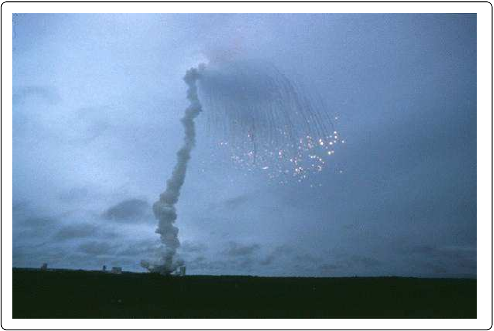
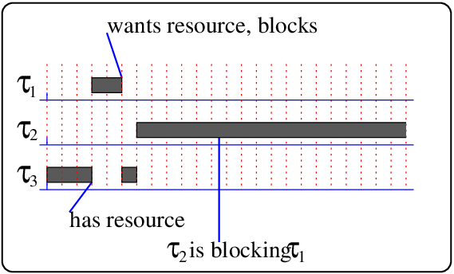
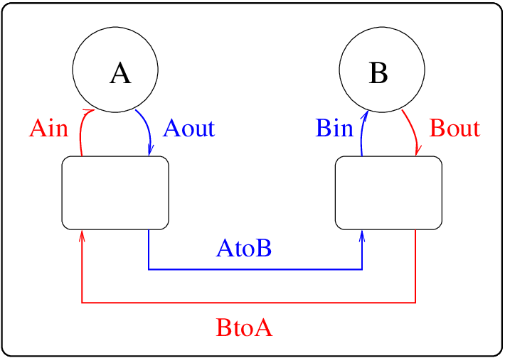
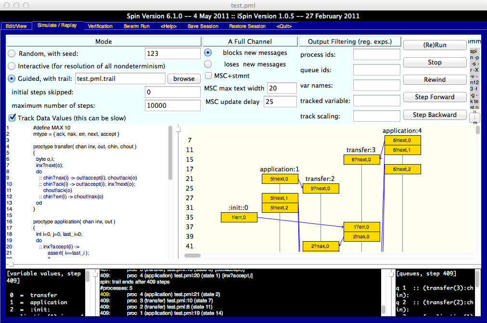

Complexity and security
Intro
Compare the following two warranties:
-
The PC Manufacturer warrants that
-
the SOFTWARE will perform substantially in accordance with the accompanying written materials for a period of ninety (90) days from the date of receipt, and
-
any Microsoft hardware accompanying the SOFTWARE will be free from defects in materials and workmanship under normal use and service for a period of one (1) year from the date of receipt.
-
-
ACCTON warrants to the original owner that the product delivered in this package will be free from defects in material and workmanship for the lifetime of the product.
The first warranty applies to a large software product (Windows NT), the product of hundreds of person-years of software development effort, and containing millions of separate components. The second warranty applies to a large hardware product (An intelligent hub), the product of tens of person-years of software and hardware development effort, and containing millions of separate components.
If we take these two warranties, and contrast them, it is clear that the reliability of software is viewed as poor, even by the largest software companies in the world, in comparison with hardware. One explanation often given for this sad state of affairs is that the software is more complicated than the hardware, and hence there is more opportunity for failure. However, this explanation is not particularly helpful, as it is clear that even small1 software is inherently unreliable. We have to recognize that most commercial software in use today contains large numbers of errors, and the software industry must improve. Another way of restating this is say that software engineers must improve.
A central issue with IT security is the complexity of modern systems, and our inability to correctly reason about, or even enumerate, the behaviour of modern software systems. When we build a bridge, in general, using more bricks makes the bridge more stable. The same cannot be said for software systems. In software development, adding more components leads to systems that are less stable, and more prone to errors, security issues and so on.
Systems and interconnections
Computer systems are found everywhere now. In a typical modern living room, it is possible to find a large number of computer systems performing various tasks. Even a humble remote (infra-red) controller may have an embedded microprocessor in it. Each of these computer systems is running software, and in many cases the software communicates with other systems, and performs critical operations (well, maybe not in a living room). We do not need to look for hypothetical examples of failure of such inter-connected software systems. There have been many examples of computer systems that have not operated as expected, resulting in catastrophic failures.
Here are two examples that show how unexpected and untested interactions between software systems and their environment led to insecurity. In these examples, the errors led to catastrophic failures, but they could just as easily have led to theft or illegal activities.
Ariane-5
The first example, the Ariane-5 launcher, failed because of differences in the environment. Specifically, the difference between the horizontal acceleration of the Ariane-5, and the Ariane-4.

The Ariane-5 launcher blew up in 1996 because of a software error. The error which ultimately led to its destruction about 40 seconds after lift off on its maiden flight was clearly identified in the report of the investigating committee .
The underlying cause for all this was a section of Ariane-5 software that was re-used from earlier Ariane-4 launchers. Ariane-5 was bigger and faster than the Ariane-4, and this software was never tested during software development, as it was considered too expensive, and needed real-time input from sensors moving in space. The fault was rooted in faster horizontal acceleration, and the resulting overflow of a variable. It is likely that if the constraints of the system had been specified, and the software tested against these constraints, then the problem would have been found without an explosion. Instead, the overflow error in both the active and the backup computers was detected and both computers then shut themselves down. This resulted in the loss of control, explosion and $5B losses.
The Mars Rover
Our second example happened on Mars, and involved a failure in logic. A service call on Mars would be an expensive proposition (a $1B proposition), and so it was critical that the software error was corrected. On the Rover, a critical process was blocked forever by an unimportant process, a priority inversion.

The spacecraft began experiencing total system resets with loss of data each time, due to this priority inversion. In the diagram to the right we see higher priority task \(\tau_{1}\) blocked by a lower priority task that is holding a shared resource. The lower priority task \(\tau_{3}\) has acquired this resource and then been preempted by the medium priority task \(\tau_{2}\). The net effect is that task \(\tau_{1}\) waits forever for task \(\tau_{3}\) to give up the shared resource it holds.
Old software is good software?
I often like to tell software engineering students about the Clayton Tunnel disaster, where two trains collided inside a tunnel, causing death and disaster, after 21 years of faultless operation. I have briefly described this in the appendix.
The time that software has been operating faultlessly is no indicator of it’s correctness. In 2014, a serious security flaw in the bash shell used on UNIX systems was discovered. It had been in the shell since 1989 - 25 years! Another serious security flaw was found in Windows systems that could run Powershell v2+ - which is pretty well all versions of Windows since 2006. Here are brief descriptions of each attack:
-
Shellshock: bash is a shell, an interpreter for the sh and csh command-line languages, found on all Unix systems. As an interpreter for a language it has all the things we expect in a computer language, variables, functions and so on. One of it’s features, added in 1989 was the ability to define functions, and keep the functions inside variables until they were to be used - that is, a function definition could be put in a variable. Unfortunately, it was possible to inject commands into the variable after the definition of the function, and the result was that these commands would be run, even if the function was not (that is they are always run). Very quickly this was exploited.
-
Powershell v2+: Powershell is a task automation and configuration management framework from Microsoft, consisting of a command-line shell and associated scripting language built on the .NET Framework. It was introduced in 2006. Recently (in April 2016), a technique for privilege escalation was uncovered. This meant that (for example) an unprivileged user could gain total control of a Microsoft machine with a few simple commands.
It is clear from these examples that security issues can appear at any time. Complex systems have flaws.
The architecture of applications
Modern software systems have a range of architectures, and are dependent on the application. However, some fixed structures have become apparent, and form “design patterns” for building software.

For example the common pattern “data warehouse”. A data warehouse is a centralized store for data from many sources, transforming them into a common, multidimensional dataset for efficient querying and analysis. It is a core component of many businesses.

The common pattern “web application” can be done in many ways. In the above example, the web server is clearly separated from the application server, which is, in a sense, removed from the details of the web application. The application server may include notions of sessions, but not frames, HTML and so on. Similarly the requests to the data server may be removed from the details of which database is in use and so on.
When building any system, the security of the system is often no more than the weakest link, and so if you have many links between components of your system, it may make it more likely to have exploitable errors. The thrust of this section is that the architecture of an application should be clear from the viewpoint of security, because a security analyst has to look at all of the components, and not be lulled into a false sense of security because of the use of some high-end security technique in some part of the overall system.
For example, using HTTPS between the web browser and server may protect you from man-in-the-middle attacks on the outside network, but does nothing for an insider attack on your database.
Defences against complexity
What are our defences against complexity? How about KISS, and formal methods?
KISS
The basic defence against complexity is found in Saltzer and Schroeder’s seminal paper , where it is termed “Economy of Mechanism”. I learnt this as KISS - keep it simple, stupid! Note that simple is quite different from small. Saltzer and Schroeder argue as follows:
This well-known principle applies to any aspect of a system, but it deserves emphasis for protection mechanisms for this reason: design and implementation errors that result in unwanted access paths will not be noticed during normal use (since normal use usually does not include attempts to exercise improper access paths). As a result, techniques such as line-by-line inspection of software and physical examination of hardware that implements protection mechanisms are necessary. For such techniques to be successful, a small and simple design is essential.
In a software engineering sense, the usual structured-programming tips help here: clear and clean interfaces between modules, avoiding global state and so on. We could give specific design rules such as:
-
Use a standard design pattern - Is your system architecture a well understood pattern?
-
Minimize subsytems - Is each component of a composite system actually necessary? Can we remove a sub component entirely? This sort of optimization may be done at the design phase.
-
Minimize the interfaces - Between each component are interfaces (perhaps communication or just calls). We should minimize the interfaces, only leaving those that are absolutely necessary.
-
Make explicit the interfaces - We should also make such interfaces explicit. It is a very bad idea to have a component that relies on something in another component, with no explicit annotation that tells you of this reliance.
-
Isolate components - Is each component stand-alone? Does it always do its job, even if all the components it commuicates with are lying to it?
Overall these rules apply to software development, resulting in code inspections, refactoring and refinement, with the goal always being a simpler system.
Least common mechanism
Another defence against complexity in Saltzer and Schroeder’s paper, is “Least Common Mechanism”. Saltzer and Schroeder argue as follows:
Minimize the amount of mechanism common to more than one user and depended on by all users. Every shared mechanism (especially one involving shared variables) represents a potential information path between users and must be designed with great care to be sure it does not unintentionally compromise security.
In a software engineering sense, we would give specific design rules such as:
-
Identify shared code - Is your common code good? Keep in mind that even libc has been recently found to have security issues. A recent bug in libc’s getaddrinfo() library function allowed arbitrary code execution by an attacker.
-
Identify shared data - If two modules share the same data, then this forms a communication or reliance interface, and should be checked.
All software development processes should include rules like these, to keep the security aspects at the front of the minds of the developers.
Formal evaluation
TCSEC (The Orange book) was the first rating system for the security of products. It defined six different evaluation classes. The classes are:
-
C1 - For same-level security access. Not currently used.
-
C2 - Controlled access protection - users are individually accountable for their actions. Most OS manufacturers have C2 versions of the OS.
-
B1 - Mandatory BLP policies - for more secure systems handling classified data.
-
B2 - structured protection - mandatory access control for all objects in the system. Formal models.
-
B3 - security domains - more controls, minimal complexity, provable consistency of model.
-
A1 - Verified design - consistency proofs between model and specification.
A more international (and non-military) effort ITSEC has been developed from an amalgamation of Dutch, English, French and German national security evaluation criteria. The particular advantage of ITSEC is that it is adaptable to changing technology and new sets of security requirements. ITSEC evaluation begins with the sponsor of the evaluation determining an assessment of the operational requirements and threats, and the security objectives. ITSEC then specifies the interactions and documents between the sponsor and the evaluator.
Again there are various levels of evaluation: E0..E6, with E6 giving the highest level of assurance. When certifying software, stating that the software complies with a certain level of safety, the ITSEC documents specify the steps the developers have to take to comply. For example, for level E6, the developers are required to provide two independent formal verifications.
Formal verification and methods
Formal methods encompass a wide range of techniques. The use of formal methods is appropriate here because if you build-in a security policy at the time you construct the software, then it is more likely to be safe.
As an example of a formal method, the model checking approach to verification of software may involve constructing formal models, with appropriate formal specifications.
The language Promela may be used to construct models of a software process. The formal basis for Promela is that it is a guarded command language, with extra statements which either make general assertions or test for reachability. It can be used to model asynchronous or synchronous, deterministic or non-deterministic systems, and has a special data type called a channel which assists in modelling communication between processes.
Spin is the checker for Promela models, and can be used to simulate or to exhaustively prove the validity of user specified correctness requirements. We add assertions to test the correctness of our model. If the asserted condition is not TRUE then the simulation or verification fails, indicating the assertion that was violated. We may also make temporal claims. For example a claim such as “we got here again without making any progress”.
The following code specifies a simple protocol, of a similar level to the flawed Clayton Train Tunnel protocol, and a simple application to exercise the protocol:
proctype transfer( chan in, out, chin, chout )
{
byte o,i;
in?next(o);
do
:: chin?nak(i) -> out!accept(i); chout!ack(o)
:: chin?ack(i) -> out!accept(i); in?next(o); chout!ack(o)
:: chin?err(i) -> chout!nak(o)
od
}
proctype application( chan in, out )
{
int i=0, j=0, last_i=0;
do
:: in?accept(i) ->
assert( i==last_i );
if
:: (last_i!=MAX) -> last_i = last_i+1
:: (last_i==MAX)
fi
:: out!next(j) ->
if
:: (j!=MAX) -> j=j+1
:: (j==MAX)
fi
od
}
init
{
chan AtoB = [1] of { mtype,byte };
chan BtoA = [1] of { mtype,byte };
chan Ain = [2] of { mtype,byte };
chan Bin = [2] of { mtype,byte };
chan Aout = [2] of { mtype,byte };
chan Bout = [2] of { mtype,byte };
atomic {
run application( Ain,Aout );
run transfer( Aout,Ain,BtoA,AtoB );
run transfer( Bout,Bin,AtoB,BtoA );
run application( Bin,Bout )
};
AtoB!err(0)
}

The system has two application processes (A and B), communicating with each other using a protocol implemented with two other transfer processes.

The spin tool may then be used to either exhaustively check the model, or to simulate and display results as above.
Summary
We have seen lots of examples of poor systems. Our means of defence include the same ideas that we generally use for all software engineering, to produce software that is resilient, but with the added danger that ANY weak link may lead to security failure.
The idea of formally (mathematically) verifying the correctness of code with respect to some specification, which includes security specifications, can lead to the level of assurance needed. Mondex is a smart card electronic cash system, implemented as a stored-value card. The system was mathematically checked for correctness, with security goals including that the bank would not-lose-money . This effort involved a considerable amount of work, but was worthwhile in the context of ensuring no security loopholes.
So there is no magic bullet for the complexity problem, but there are some guidelines - simplify and reduce the software, so that reasoning about it is possible, and then reason about it (preferably using tools that ensure correctness).
The Clayton Tunnel
This example is an historical one, and predates computers, but it is directly related to system security, because it involved a failure of a protocol. The protocol had been in continuous use for 21 years, and failed because of race conditions in the protocol.
In England in 1861, a poorly constructed protocol failed causing a train to crash into another. The protocol’s function was to ensure that only one train could be in the Clayton Tunnel at a time. At each end of the tunnel was a signal box, with a highly trained signaller, and some hi-tech (for the 19th century) signalling equipment involving a three-way switch and an indicator. The signaller could indicate any of three situations to the other signaller: (i) nothing at all, (ii) Train in Tunnel, and (iii) Tunnel Clear. The signallers had a red flag which they would place by the track to signal to the train drivers to stop, and all participants followed the following protocol:
-
Signallers: See the train (entering or leaving tunnel), signal “Train in Tunnel” or “Tunnel Clear’” to the other signaller, and then set or clear a red flag on the track.
-
Train Driver: See the red flag, then don’t enter tunnel.
It seems OK doesn’t it? But this is what happened after 21 years of faultless operation:
-
The first train entered the tunnel, and the signaller sent a ’Train in Tunnel’ indication to the other signaller. He (it was a he) went out to set the red flag ..... just as a second train whizzed past. The signaller thought about this for a while and then sent a second ’Train in Tunnel’ indication.
-
At the other end of the tunnel, the signaller received two messages, and then a single train came out of the tunnel. He signalled ’Tunnel Clear’, waited another few minutes, and then sent a second ’Tunnel Clear’ message.
Where was the second train?
- Well - the train driver had seen the flag, and decided to be cautious, so he stopped the train and then started backing out of the tunnel. Meanwhile, the first signaller thought that all was well and waved on through the next train.
A flaw in a protocol had led to two trains colliding - inside the tunnel - one going forward and one in reverse. In the ensuing mess, over 20 people died and a large number of people were hospitalized.
-
A small software structure in this context might be one with (say) up to 2,000 lines of code, 200 variables and four programming interfaces. ↩